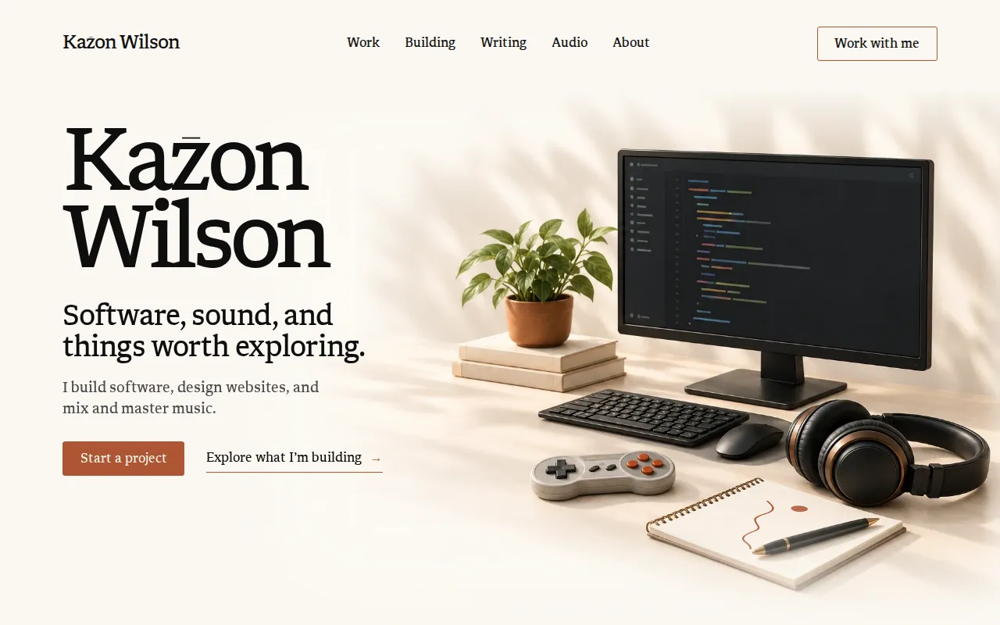
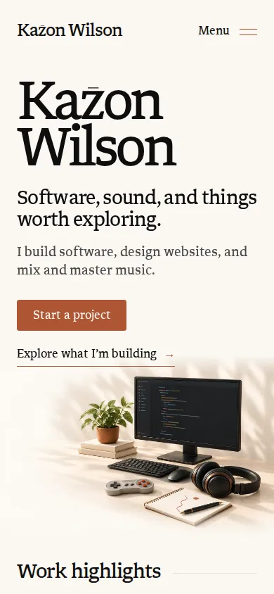
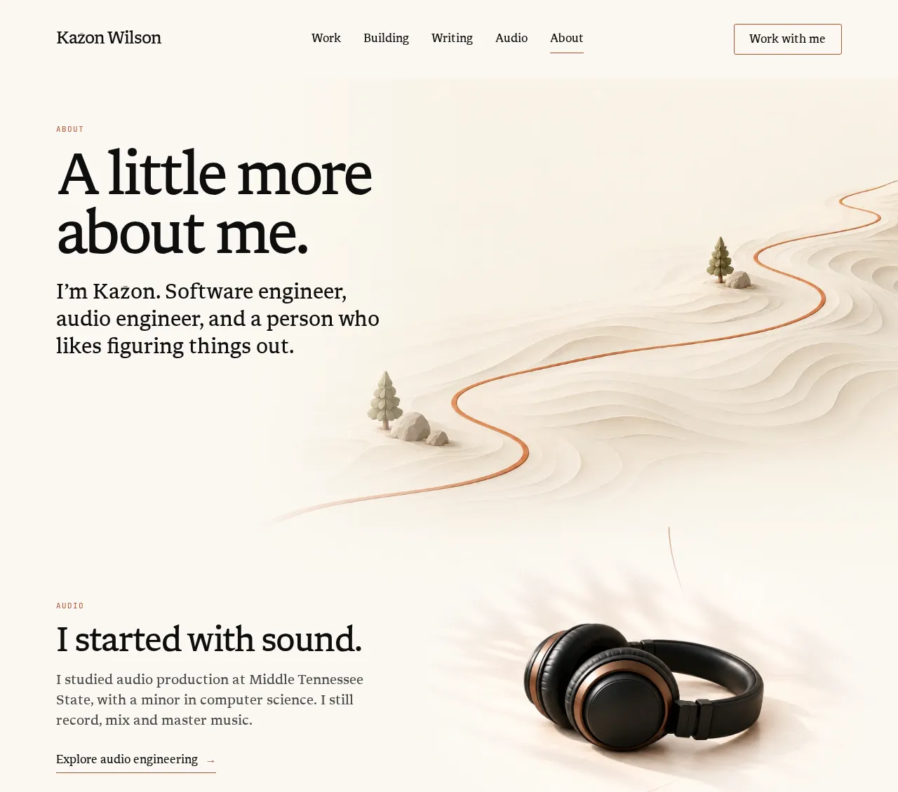
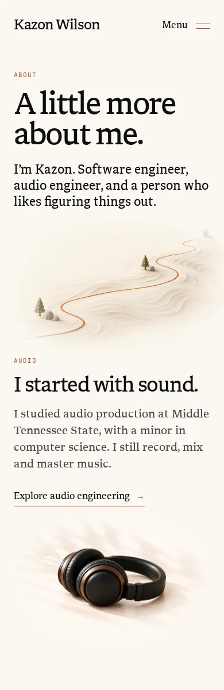
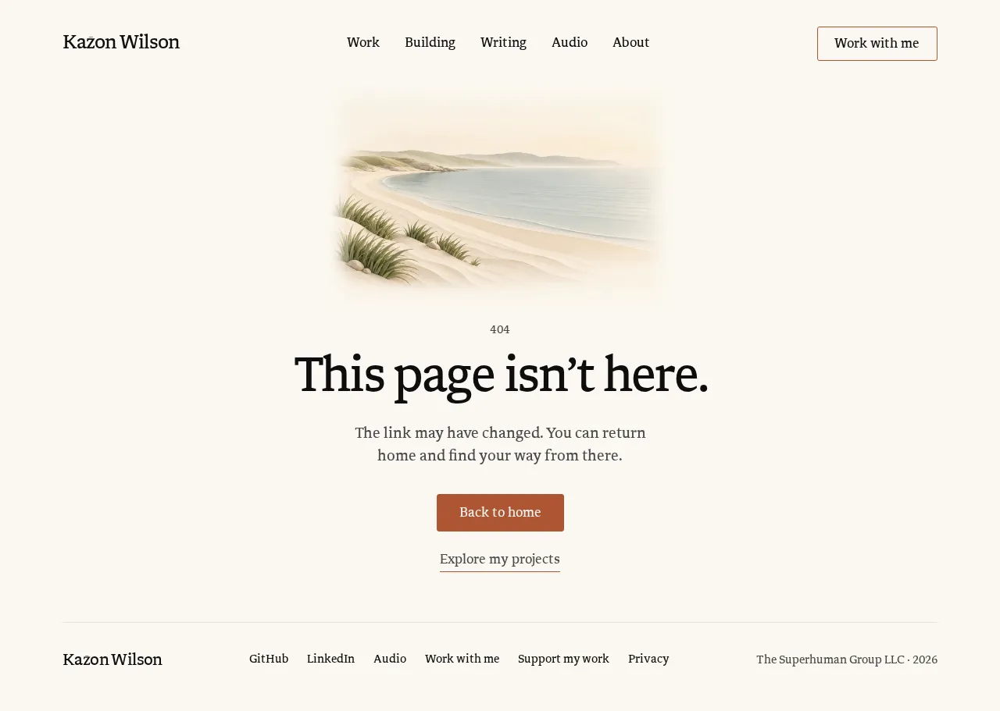
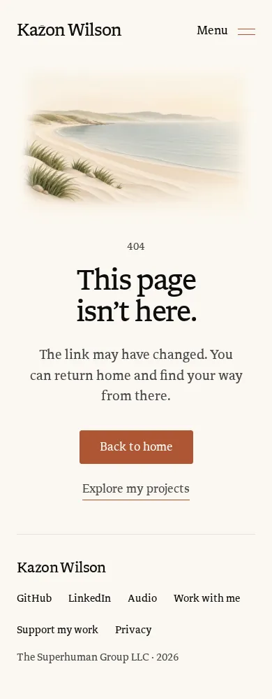
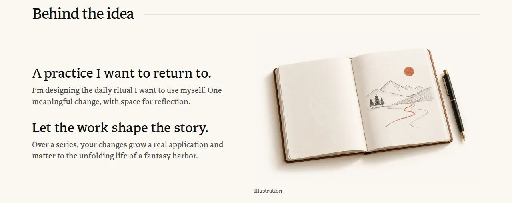
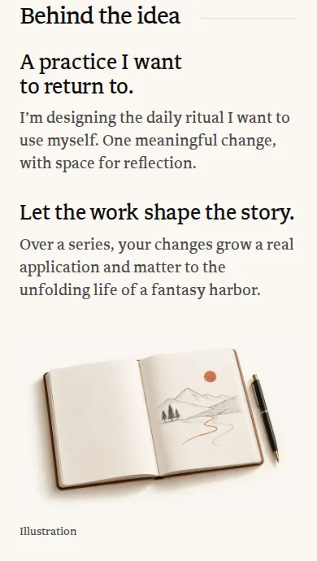
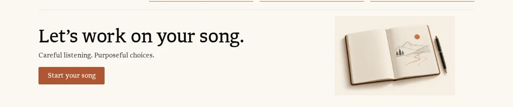

Design study · Scene art and image QA · 2026-10-22 · board D5
Scene art: alternatives
Hallmark flagged the site’s generated scene art as an “AI-illustration look” (punch list #16, raised by four of the five auditor groups). The verifier filed it as Your call 7, because you chose this art from rendered studies and every file passed image QA. This board puts real alternatives in front of you so you can decide.
It covers the Home studio, the About terrain and its four chapter objects, the 404 coast, a possible new image QA check, and the two notebook removals already in your September 26 plan. Option A is always today: crops of the CI screenshots of PR #204 at f0abd1f (taken with reduced motion), or the real files with their real masks. One option per decision is marked Recommended. Drawings labelled as studies were made for this board.
Before the decisions
Would a first-time visitor read the art as generated?
My read: yes for the Home studio and the chapter objects; maybe for the notebook, the coast and the terrain. This is my judgment, not a test with visitors. D5.3 adds a check that would test it.

- Dappled leaf shadows across the wall and desk. Generated interiors use this light constantly.
- Colored bars where the code should be. Up close it is not code in any language.
- A glossy, evenly lit product finish on the headphones and controller: render light, not room light.
- Everything new, centered and unused. No cable reaches the keyboard, mouse or monitor, and nothing shows wear.
Why it matters now. Website design is one of the three offers on Home, and this site is your portfolio example for it. The studio is the first picture a website client sees, so it is the first sample of design work they judge.
| Art | Where it appears | My read | What gives it away |
|---|---|---|---|
studio-v1 | Home hero | Likely | The four tells above |
headphones-v1, controller-v1 | About chapters; the headphones also on the Audio hero | Likely | Product-render gloss floating on an empty cream ground |
laptop-v1 | About software chapter | Likely | The “</>” symbol on the screen (the auditors’ specific note) |
notebook-v1 | Home Writing, About, the Daily, the audio portfolio | Possibly | The sketch is believable; the binding and pen are render-perfect |
quiet-coast-v2 | 404 | Possibly | Airbrushed gradients and a place that is nowhere in particular |
terrain-v1 | About introduction | Less likely | Reads as paper sculpture; the terracotta path carries it |
D5.1 · Studio, terrain and chapter objects
How should the scene art read?
Should the Home studio, the About terrain and the four About chapter objects stay rendered, or move to a printed, drawn or photographed look?
What Hallmark flagged: #16, “AI-illustration look” [chrome-9, home-9, building-13, audio-8]. Its suggested fix: hand-built SVG or CSS, or real captures; if an image stays generated, add grain and an asymmetric crop, and drop the laptop’s “</>” screen.
Where today’s choice was made: you selected these compositions from the September 9 studies (docs/design-concepts/2026-09-09/home-quiet-studio-v2.png, about-personal-path-v1.png). Each file passed agent QA under docs/generated-image-qa.md (docs/asset-reviews/studio-v1.md, terrain-v1.md, headphones-v1.md, laptop-v1.md, controller-v1.md, notebook-v1.md). The studio and chapter scenes were added on September 27 (docs/website-content-model.md, “Home motion”).
One answer for all of them. Image QA asks repeated objects, light and texture to stay one visual family, so the choice applies to every piece listed here. The Audio hero reuses the same headphones file and would follow.
D5.1-AKeep as is
Today

About today


About: the terrain and the four chapter objects, with their page masks

- What changes
- Nothing. The art, the September 27 scenes and the QA records stay as they are.
- Why it could be better
- The warm, soft light is the “quiet studio” you picked from rendered studies, and keeping it costs nothing.
- Trade-off
- The studio is the first image a website client sees, and to anyone who has seen a lot of generated art it reads as generated. If you add the D5.3 check, these files would be recorded as failing it unless you note an exception.
- Effort
- None
- Files it would touch
- None.
- Guideline check
- Copy unchanged · tokens unchanged · decorative, empty alt · reduced motion already shows the resting frame · no new image QA.
D5.1-BPrint it in the site’s two inks
RecommendedWhy I recommend it: it changes how the art reads at the lowest cost, keeping the files, compositions, crops and September 27 scenes, while printing them in the site’s own ink and terracotta, closer to the flat, drawn Building and Writing illustrations.
Kazon
Wilson
Software, sound, and things worth exploring.
I build software, design websites, and mix and master music.
Kazon
Wilson
Software, sound, and things worth exploring.
I build software, design websites, and mix and master music.
About: the terrain and the four chapter objects, printed, with their page masks
- What changes
- An SVG filter reprints each picture in two inks from the palette, the way a two-color risograph print looks:
--inksolid in the shadows and as a fine grain in the mid-tones,--accentonly where the picture is already terracotta or copper (pot, buttons, earcup rings, path), with a 1px offset between the inks. Light tones drop out to paper, so the soft glow and most of the leaf shadows go; leaves print in ink. The landscapes use a softer curve so their ridges and water stay. Replay runs today’s studio scene over the print, still registered. “Show original” switches the filter off for comparison. - Why it could be better
- The render tells (gloss, glow, smooth gradients) are exactly what the filter removes first. The art moves closer to the drawn illustrations on Building and Writing, which are flat ink and terracotta with a few quiet tones on paper. Layout, motion, copy and the reviewed files stay the same.
- Trade-off
- It is a treatment, not new art. The objects and composition are still the generated ones, so a careful viewer may still see a filtered render; run the D5.3 check on the result, and if it fails, C is the next step. The laptop keeps its “</>” screen, which Hallmark asked to drop; the print does not remove it. Grain is busier than today’s calm glow, and very light pictures (the notebook above) nearly drop out without their own curve. Start with the CSS filter; if phones stutter while the studio scene plays, bake the treatment into the WebP files, which changes their hashes and needs updated QA records.
- Effort
- M (S to apply; tuning per picture and in-page QA at 1280, 800, 390 and 320)
- Files it would touch
src/layouts/BaseLayout.astro(one hidden inline SVG holding the two filters) andsrc/styles/global.css(a.printedclass),src/components/Hero.astro,src/pages/about.astro,src/components/audio/AudioHero.astro,src/components/home/StudioLife.astroandsrc/components/ObjectLife.astro(overlay colors checked against the print),docs/asset-reviews/*.md(in-page re-inspection; new hashes only if baked). The link previews use the same files: the home, about and audio scenes inscripts/og-video/scenes/follow, re-rendered withnode scripts/og-video/render.mjs home about audio(new files inpublic/og/,src/data/og-media.jsonanddocs/asset-reviews/link-previews.md).- Guideline check
- Copy unchanged · only
--ink,--accentand--paper· decorative, alt stays empty · the scenes play as today and reduced motion shows the resting frame · needs image QA: in-page re-inspection of every placement (the files are unchanged unless baked).
D5.1-CDraw it as line art
AlternativeStudy drawing. Production art would need image QA.
Kazon
Wilson
Software, sound, and things worth exploring.
I build software, design websites, and mix and master music.
Kazon
Wilson
Software, sound, and things worth exploring.
I build software, design websites, and mix and master music.
About: the terrain and the four chapter objects, drawn (line art on paper needs no edge mask)
- What changes
- The studio, terrain and four objects become SVG line drawings: ink outlines, solid ink for screens and earcups, terracotta for the pot, buttons, path and sun. The objects sit roughly where they are today, so the crops stay, and the soft edge masks are no longer needed. The laptop’s “</>” becomes code rows drawn the way Home’s code field draws them (colored rows that read as code at a glance), so its blinking caret ends a row. Replay draws the outlines once, then runs today’s three scenes.
- Why it could be better
- A drawing like this is unlikely to read as AI art. It joins the Building illustrations, the Writing path, Home’s waveform and the About path in one family. It is crisp at every size and tiny to load, and the scenes become part of the drawing instead of an overlay measured on a picture.
- Trade-off
- It replaces the rendered quiet studio you selected, and the warm light goes with it. Good line art takes several rounds; a rushed version reads as clip art. If Claude Code helps with the SVG, you make the design calls and review every drawing, as with the rest of the site, and the project journal says how they were made. The screens still show colored code rows rather than legible code, the same convention as Home’s code field.
- Effort
- L
- Files it would touch
- New
src/components/art/drawings (studio, terrain, objects),src/components/Hero.astro,src/pages/about.astro,src/components/audio/AudioHero.astro,src/pages/index.astro(Writing notebook),src/components/home/StudioLife.astroandsrc/components/ObjectLife.astro(folded into the drawings); retire six files insrc/assets/sitewith theirdocs/asset-reviewsrecords (the notebook only once the Daily and portfolio placements are gone, see D5.4). The link previews use the same files: the home, about and audio scenes inscripts/og-video/scenes/follow, re-rendered withnode scripts/og-video/render.mjs home about audio(new files inpublic/og/,src/data/og-media.jsonanddocs/asset-reviews/link-previews.md). - Guideline check
- Copy unchanged ·
--ink,--accent,--paperplus the code colors already insrc/components/home/CodeField.astro· decorative and hidden from screen readers · draw-on and scenes rest within five seconds; reduced motion shows the finished drawing · needs image QA: the drawings are not generated, but each gets the inspection checks (proportions, physical logic, site consistency) and an in-page review at 1280, 800, 390 and 320.
D5.1-DPhotograph your own objects
AlternativeShot plan only. No photos exist yet; the slots show what you would shoot.
Kazon
Wilson
Software, sound, and things worth exploring.
I build software, design websites, and mix and master music.
Kazon
Wilson
Software, sound, and things worth exploring.
I build software, design websites, and mix and master music.
About: the terrain and four photo slots
- What changes
- You photograph your own headphones, audio interface, laptop, notebook and a controller (only things you own), overhead on a paper sweep in soft daylight. The studio becomes that flat lay, and each About chapter gets its own object photo. The terrain stays, drawn or printed.
- Why it could be better
- Real objects are the clearest answer to “is this generated?”, and they are honest about what you use and how you work.
- Trade-off
- It costs your time, a camera and a careful edit, and every frame needs a privacy check: nothing that shows your home or where it is (no room, window, reflection, mail or address), no screen with private data, and no location data (strip metadata on export). The Home scenes need re-measuring on the new picture, and the monitor typing moves to the laptop. Photos still need in-page QA and must match each other in light and color.
- Effort
- M for you (shoot and select) and M to build and re-register the scenes
- Files it would touch
- New photo files in
src/assets/sitewithdocs/asset-reviewsrecords (the asset check needs one for every file there),src/components/Hero.astro,src/components/home/StudioLife.astro,src/pages/about.astro,src/components/ObjectLife.astro,src/components/audio/AudioHero.astro. The link previews use the same files: the home, about and audio scenes inscripts/og-video/scenes/follow, re-rendered withnode scripts/og-video/render.mjs home about audio(new files inpublic/og/,src/data/og-media.jsonanddocs/asset-reviews/link-previews.md). - Guideline check
- Copy unchanged · no home address, home details or location data in any frame · decorative, empty alt · scenes rest within five seconds · needs image QA: in-page inspection and a record per file (photos are not generated, but the asset check covers every file in
src/assets/site).
D5.2 · The 404 page
What should sit above the 404 message?
Should the 404 keep the generated coast, or use a horizon, a path or a waveform drawn from the site’s own motifs?
What Hallmark flagged: #16 lists the 404 coast among the generated images. Separately, worth-considering #9 found “Back to home” starting at y=802 on a 1280 × 800 screen; that fix is in PR #204 (commit ab4dae0 caps the coast at 450px wide, about 300px tall, which lifts “Back to home” to about y=633), so it is not repeated here.
Where today’s choice was made: you asked for beautiful, peaceful imagery on the 404, and the coast replaced a photographic version on September 15 (docs/prelaunch-qa-2026-09-15.md:36-40, docs/asset-reviews/quiet-coast-v2.md). The same revision removed a decorative route illustration and oversized error-code artwork from the page (:34).
D5.2-AKeep the coast
Today

- What changes
- Nothing beyond the 450px cap in PR #204, shown above: “Back to home” sits at about y=633 on a 1280 × 800 screen. If you pick D5.1-B, the same print treatment can cover the coast too, with an in-page re-inspection.
- Why it could be better
- It is the peaceful picture you asked for, and it passed QA.
- Trade-off
- It is the one scene with no tie to you or to the site’s motifs, and #16 reads it as generated.
- Effort
- None
- Files it would touch
- None (the cap is in
src/pages/404.astroin PR #204). - Guideline check
- Copy unchanged · tokens unchanged · decorative, empty alt · static · no new image QA (an in-page re-inspection only if printed).
D5.2-BHorizon over water
RecommendedWhy I recommend it: it keeps the peaceful note with a motif the site already owns, Home’s sun over the contact rule, and drops a generated picture from a page that has no story to tell.
404
This page isn’t here.
The link may have changed. You can return home and find your way from there.
404
This page isn’t here.
The link may have changed. You can return home and find your way from there.
- What changes
- The coast becomes Home’s horizon: a terracotta rule with the sun rising over it once on load, and three short strokes of water under it. CSS only, using Home’s own values (84px sun, 14% glow).
- Why it could be better
- The same calm from the site’s own motif, and the page gets a little shorter: “Back to home” sits at about y=576 on a 1280 × 800 screen, against about y=633 with the capped coast.
- Trade-off
- Less picturesque than the coast. It borrows Home’s horizon sun (Your call 9), so it follows D2.3 on the Home motion board: if that flattens Home’s sun, this sun goes flat too, and if Home’s sun goes, pick C or D.
- Effort
- S
- Files it would touch
src/pages/404.astro; removesrc/assets/site/quiet-coast-v2.webpanddocs/asset-reviews/quiet-coast-v2.md. The 404 link preview uses the coast too:scripts/og-video/scenes/not-found.htmlfollows, re-rendered withnode scripts/og-video/render.mjs not-found(new files inpublic/og/,src/data/og-media.jsonanddocs/asset-reviews/link-previews.md).- Guideline check
- Copy unchanged ·
--accentand--paperthroughcolor-mix, as on Home · decorative and hidden from screen readers · the sun rises once in 1.6s; reduced motion shows it risen · no image file, so no asset record, but it needs image QA’s in-page inspection (section 3) at 1280, 390 and 320.
D5.2-CA path with a missing stretch
AlternativeStudy drawing. Production art would need image QA.
404
This page isn’t here.
The link may have changed. You can return home and find your way from there.
404
This page isn’t here.
The link may have changed. You can return home and find your way from there.
- What changes
- A drawn path in the style of the Writing illustration and the About path: solid, then a dotted stretch where the route is missing, then solid again, ending in an arrow that points onward.
- Why it could be better
- It shows what the copy says (“The link may have changed”) with a motif from three other pages.
- Trade-off
- More literal than calm. The September 15 revision removed a decorative route illustration from this page, so this brings a similar idea back. If the draw ran long, the dotted stretch could read as a loading state, so it finishes in under two seconds.
- Effort
- S
- Files it would touch
src/pages/404.astro; retire the coast file and its record. The 404 link preview uses the coast too:scripts/og-video/scenes/not-found.htmlfollows, re-rendered withnode scripts/og-video/render.mjs not-found(new files inpublic/og/,src/data/og-media.jsonanddocs/asset-reviews/link-previews.md).- Guideline check
- Copy unchanged ·
--accent,--muted,--paper· decorative and hidden from screen readers · draws once in about 1.9s; reduced motion shows it drawn · not generated, but needs image QA: the inspection checks and an in-page review of the drawing.
D5.2-DA waveform on still water
AlternativeStudy drawing. Production art would need image QA.
404
This page isn’t here.
The link may have changed. You can return home and find your way from there.
404
This page isn’t here.
The link may have changed. You can return home and find your way from there.
- What changes
- The coast becomes a short waveform resting on its own faint reflection, the way light sits on still water. It uses the peak shape of Home’s waveform edge (a phrase that fades in, swells twice and fades out), in terracotta on paper, and the bars rise once on load.
- Why it could be better
- It keeps the calm water you asked for and ties it to sound, one of the site’s three subjects, with no picture left to read as generated. It does not depend on Home’s horizon sun, and “Back to home” moves up to about y=515 on a 1280 × 800 screen.
- Trade-off
- More abstract than the coast: some visitors will see an audio meter, not water. It quotes Home’s waveform rather than adding a new picture, so it reads as a small echo of Home.
- Effort
- S
- Files it would touch
src/pages/404.astro(an inline SVG drawn withwaveformPeaksfromsrc/lib/home-motion.ts); retiresrc/assets/site/quiet-coast-v2.webpanddocs/asset-reviews/quiet-coast-v2.md. The 404 link preview uses the coast too:scripts/og-video/scenes/not-found.htmlfollows, re-rendered withnode scripts/og-video/render.mjs not-found(new files inpublic/og/,src/data/og-media.jsonanddocs/asset-reviews/link-previews.md).- Guideline check
- Copy unchanged ·
--accentand--paperonly · decorative and hidden from screen readers · the bars rise once in about 1.9s; reduced motion shows them at rest · not generated, but needs image QA: the inspection checks and an in-page review at 1280, 390 and 320.
D5.3 · Image QA
Add a “reads as generated” check to image QA?
Should docs/generated-image-qa.md gain a check that an image a first-time visitor would take for AI art fails?
Why it comes up: the identity question above. Today’s checks (section 2 of docs/generated-image-qa.md) cover construction, physical connections, spatial logic, reference accuracy, image integrity, site consistency and meaning, but not how the picture reads to a visitor. Every current file passed all seven.
Where the process was decided: you required image QA on September 10 (docs/generated-image-qa.md:1-6); the records live in docs/asset-reviews/.
D5.3-ANo new check
Today2. Inspect the generated result
| Check | Pass condition |
|---|---|
| Proportions and construction | Objects have credible relative scale, perspective, thickness… |
| … | Physical connections, spatial logic, reference accuracy, image integrity |
| Site consistency | Repeated objects preserve identity; lighting, palette, texture, detail, and icon strokes belong to the same visual family. |
| Meaning | The image helps the page. It does not imply an unsupported capability, real recording, product state, measured result, or employer artifact. |
- What changes
- Nothing.
- Why it could be better
- The seven checks already catch broken objects and false claims, and QA stays quick.
- Trade-off
- Whether a picture reads as generated stays a matter of taste each time, so this board’s question can come back with the next image.
- Effort
- None
- Files it would touch
- None.
- Guideline check
- No copy, tokens, motion or image changes.
D5.3-BAdd a required check
RecommendedWhy I recommend it: it turns this board’s question into a check with a pass condition, so it is answered the same way for every new picture instead of by taste.
2. Inspect the generated result
| Check | Pass condition |
|---|---|
| … | The seven existing checks, unchanged |
| Meaning | The image helps the page. It does not imply an unsupported capability, real recording, product state, measured result, or employer artifact. |
| Reads as generated | Shown at its page size for about five seconds, someone who has not seen the site calls it a drawing, a print or a photo, not AI art. Without a fresh viewer, none of these is the first thing you notice: a glossy, evenly lit product-render finish; dappled leaf shadows or a soft glow over everything; screens showing colored bars or a symbol where content belongs; objects that are all new, centered and unused. |
- What changes
- One row in section 2, one line in the record template, and a one-time check of the current files written into their reviews.
- Why it could be better
- It would have put this question to the studio when it was first reviewed on September 10, and it gives D5.1’s result a pass or fail instead of an opinion.
- Trade-off
- A five-second read is subjective, and an agent can only look for the listed tells. Today’s studio and objects would probably fail, so this needs a D5.1 change alongside it, or an exception line in each record.
- Effort
- S
- Files it would touch
docs/generated-image-qa.md, one line in eachdocs/asset-reviews/*.md.- Guideline check
- Docs only, no em dashes · no site copy · no tokens or motion · makes image QA stricter for every future picture.
D5.3-CAdd it as advisory, and say how the art is made
Alternative2. Inspect the generated result
| Check | Pass condition |
|---|---|
| Reads as generated (advisory) | The same test as B. Record the result; a fail does not block the image, but the record says so. |
Plus one public line copy change, needs approval
Illustrations on this site were made with image generation tools and reviewed against a written checklist.
- What changes
- The check records a result without blocking, and a short line says how the illustrations were made (shown in the footer; the website’s project page may be a better home).
- Why it could be better
- If the art stays generated, saying so plainly fits your AI stance on truthful attribution, and a visitor who notices is not left guessing.
- Trade-off
- It draws attention to what D5.1 is trying to fix, a line on every page is a lot of weight for one fact, and advisory checks tend to be skipped. The wording must stay truthful: the reviews so far were agent reviews, so it must not say you reviewed each image unless you did.
- Effort
- S
- Files it would touch
docs/generated-image-qa.md,src/components/Footer.astro(orsrc/pages/building/personal-website.astro).- Guideline check
- Copy change, needs approval · no em dashes, no buzzwords · truthful AI attribution · no tokens, motion or images.
D5.4 · Two quick wins from September 26
Remove the notebook from the Daily and the portfolio close?
Yes or no: take the notebook illustration out of The Engineer’s Daily “Behind the idea” section and out of the audio portfolio’s closing section, as your September 26 plan already says?
What Hallmark flagged: #16 lists both placements (src/pages/building/the-engineers-daily.astro:26, src/pages/audio/portfolio.astro:35).
Where it was decided: your plan keeps the notebook where it means something (Writing and the About chapter) and removes it where it is generic decoration, using plain section framing instead of a substitute picture (docs/audits/2026-09-26/website-simplification-audit.md:450-456, S11, and :542-543). The Audio “Working together” removal from the same item is already done.
D5.4-ANo, keep the notebook
Today


- What changes
- Nothing.
- Why it could be better
- The pages keep a picture in those sections.
- Trade-off
- The same notebook appears on four pages today (five when S11 was written), and on these two it stands for nothing in particular. On the portfolio its rectangle edge shows, because that placement has no edge mask (image QA section 3 asks for no visible rectangle unless a frame is intentional). On phones the portfolio already hides it below 700px.
- Effort
- None
- Files it would touch
- None.
- Guideline check
- No changes.
D5.4-BYes, remove both
RecommendedWhy I recommend it: you agreed to it on September 26 (step 6 of the plan’s “Agreed order of work”), it only waits to be done, and both sections read well without a picture.
A practice I want to return to.
I’m designing the daily ritual I want to use myself. One meaningful change, with space for reflection.
Let the work shape the story.
Over a series, your changes grow a real application and matter to the unfolding life of a fantasy harbor.
A practice I want to return to.
I’m designing the daily ritual I want to use myself. One meaningful change, with space for reflection.
Let the work shape the story.
Over a series, your changes grow a real application and matter to the unfolding life of a fantasy harbor.
Explore the services
Two-track vocal mixingAbout the service →Full mixingAbout the service →MasteringAbout the service →Let’s work on your song.
Careful listening. Purposeful choices.
Start your song- What changes
- Daily: the two short ideas sit side by side, exactly like Threadline’s “Behind the idea” (the same
.project-pairwith Threadline’s two-column rule), and the “Illustration” caption goes with its picture. Portfolio: the closing section keeps its heading, line and button, left-aligned, as it already looks on phones. - Why it could be better
- One picture, one meaning. The notebook stays on Home Writing and in the About chapter, where it stands for writing and what comes next.
- Trade-off
- The Daily has no picture between the lesson capture and the journal; that is the plain framing your plan asked for.
- Effort
- S
- Files it would touch
src/pages/building/the-engineers-daily.astro,src/pages/audio/portfolio.astro,src/styles/music-hubs.css(drop the.hub-outro imgrules),src/styles/project-journal.cssandsrc/pages/building/threadline.astro(share Threadline’s two-column rule instead of copying it).- Guideline check
- Copy unchanged (only the caption “Illustration” goes, with its image) · no new tokens · no motion · removes two generated-art placements; no new image QA.
Your decisions
Four choices, one per decision
- D5.1How should the scene art read?A keep · B print it in two inks · C line art · D your own photosRecommended: B, print it
- D5.2What sits above the 404 message?A the coast · B horizon over water · C a path with a missing stretch · D a waveform on still waterRecommended: B, horizon over water
- D5.3Add a “reads as generated” check?A no · B a required check · C an advisory check plus a public lineRecommended: B, a required check
- D5.4Remove the two generic notebooks?A no · B yes, bothRecommended: B, yes
How they combine. If you pick D5.1-B and keep the coast (D5.2-A), print the coast too. D5.3-B pairs with any D5.1 except A, unless you add an exception line to today’s records. D5.2-B follows D2.3 on the Home motion board: a flat sun there means a flat sun here, and if Home’s sun goes, choose D5.2-C or D instead. Nothing here changes copy except D5.3-C’s public line.